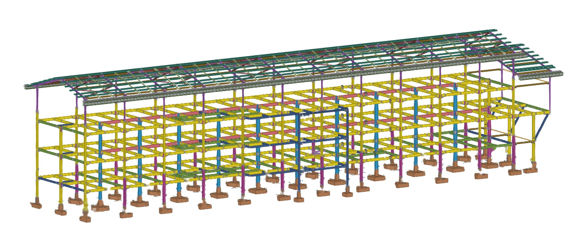

PROJECT / ONGOING
Medikon Prima Lab Warehouse.
Structural steel modelling of a warehouse building. This project is currently in progress.

The interactive IFC preview is not available yet. This project is still being modelled and is currently ongoing.
01 — PROJECT NOTES
About this model
This project features the structural steel modelling of a warehouse building for Medikon Prima Lab.
The modelling work was developed from 2D construction drawings using Tekla Structures, covering the main structural members and their arrangements.
The scope also included shop drawing preparation and release for construction. The project is currently ongoing, with construction progress still underway.
02 — MODEL CONTENT
Technical preview
The 3D structural model was developed using Tekla Structures for structural visualization and detailing purposes.
The model represents the warehouse structural arrangement and serves as the basis for shop drawing preparation and construction reference.
← Back to selected work